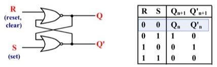
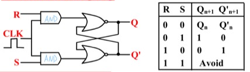

Plan your revision
Estimated chapter weights from our review of the seven December final papers, 2018–2024. These are historical topic classifications, not official allocations or predictions for a future exam.
Average final-exam weight by chapter
Chapters 2–5 account for approximately 59% overall. The recent three-paper average places more weight on Chapters 3–5 and memory hierarchy.
| Chapter / group | 2018–2024 average | 2022–2024 average | Typical questions |
|---|---|---|---|
| Ch. 1 Computer organization, performance & technology | 13.1% | 7.7% | CPU time, CPI, clock rate, power wall and dynamic power |
| Ch. 2 Basic organization, operations & I/O | 27.2% | 26.0% | Bus activity, instruction execution, memory maps, registers, interrupts and DMA |
| Ch. 3–5 ARM instructions, programs & arithmetic | 31.7% | 39.0% | Assembly programs, addressing modes, loops, procedures, signed numbers and overflow |
| Ch. 6 ARM processors | 12.1% | 14.0% | Pipelines, latency, throughput, datapath and processor features |
| Ch. 7 Memory hierarchy | 4.3% | 10.0% | Cache misses, stall cycles and perfect-cache performance |
| Ch. 8–9 Multiprocessors, cloud/GPU computing & smart applications | 11.6% | 3.3% | Computing architectures and sensor-data system design |
| Total | 100% | 100% |
Year-by-year breakdown
Each row represents 100% of the marks answered in that exam. The 2018 row uses the optional-question adjustment below.
| Paper | Ch. 1 | Ch. 2 | Ch. 3–5 | Ch. 6 | Ch. 7 | Ch. 8–9 |
|---|---|---|---|---|---|---|
| 2018 | 25% | 37.5% | 18.75% | 18.75% | 0% | 0% |
| 2019 | 17% | 17% | 22% | 8% | 0% | 36% |
| 2020 | 6% | 27% | 32% | 0% | 0% | 35% |
| 2021 | 21% | 31% | 32% | 16% | 0% | 0% |
| 2022 | 3% | 39% | 30% | 13% | 15% | 0% |
| 2023 | 8% | 8% | 54% | 26% | 4% | 0% |
| 2024 | 12% | 31% | 33% | 3% | 11% | 10% |
How the estimates were calculated
- Each question's marks are assigned once to its main assessed topic. Each exam has equal weight in the average.
- 2018 optional questions: retain the compulsory 25-mark Q1 and multiply each optional question's marks by ¾. This averages the four possible selections of three questions from Q2–Q5.
- Chapters 3–5 are grouped because instruction knowledge, program structure, signed-number representation and arithmetic overlap.
- Chapters 8–9 are grouped for parallel/cloud/GPU system-design questions in smart-application settings. Most marks in this group assess Chapter 8-type knowledge. No standalone question specifically testing the current Chapter 9's AIoT definitions or examples was identified.
- Pipeline questions are assigned to Chapter 6, cache questions to Chapter 7, and memory-address calculations to Chapter 2. A smart-car or drone setting alone does not make a question a Chapter 9 question.
- Values are rounded to one decimal place in the average table. Older papers may reflect a different syllabus emphasis.
Revision priorities and source papers
Practise Chapters 2–5 most, then cover Chapter 6 thoroughly. Master Chapter 1's recurring performance calculations and Chapter 7's cache calculations. Cover Chapters 8–9 as well: their historical weighting varies substantially.
Source papers: December ELEC2441 final examinations, 2018, 2019, 2020, 2021, 2022, 2023 and 2024, supplied by the user. This overview reproduces our earlier discussion; it is not a new independent marking audit.
Computer Organization, Performance & Technology
1.7 Performance Measures
Lecture Note #1 · pp. 25–351. Terms and units
Formulas use the full descriptions from the lecture notes. CPI is the abbreviation used in the slides.
| Term | Meaning | Unit |
|---|---|---|
| Performance | Inverse of execution time | 1/s |
| Execution time | Time required to complete a task or program | s |
| CPU time | Time the CPU spends computing for the program | s |
| CPU clock cycles | Clock cycles required for the program | cycles |
| Instruction count | Number of instructions executed by the program | instructions |
| CPI | Average clock cycles per instruction | cycles/instruction |
| Clock cycle time | Time for one period of the processor clock | s/cycle |
| Clock rate | Number of clock cycles per second | Hz = cycles/s |
2. Throughput and execution time (p. 25)
Execution time is the time required to complete a task or program. Throughput is the number of tasks or instructions completed per unit time:
This equation expresses the slide's verbal definition. Throughput and the execution time of an individual task are different metrics; they are not generally reciprocals.
3. Performance and relative performance (pp. 26-27)
If X has $n$ times the performance of Y:
Rearrangements:
Example 1: $\text{Execution time}_{A}=10\ \mathrm{s}$ and $\text{Execution time}_{B}=13\ \mathrm{s}$.
A has 1.3 times the performance of B.
Example 2: $\text{Execution time}_{X}=28\ \mathrm{ms}$ and $\text{Performance}_{X}/\text{Performance}_{Y}=1.65$.
4. Components of CPU time (p. 28)
Using the accounting scope adopted in the slides:
- User CPU time: CPU time spent executing user-program instructions.
- System CPU time: CPU time spent by the OS performing work on behalf of the program.
- Child CPU time: included where the measurement scope includes child processes.
CPU time measures actual CPU work. It is not generally equal to elapsed time, which may include waiting.
5. Clock period and clock frequency (p. 28)
Slide example:
6. CPU time and total clock cycles (pp. 28-30)
Useful rearrangements:
Example 1: A runs the program in 12 s at 2 GHz.
Example 2: B requires 1.2 times A's clock cycles and must finish in 6 s.
7. CPI and the CPU performance equation (p. 31)
Unit check:
8. CPI performance comparison examples (pp. 32-34)
Example 1: Both computers execute the same instruction count $\text{Instruction count}$.
A has 1.2 times the performance of B.
Example 2: X: 236 ps, CPI 2.65. Y: 354 ps, CPI 1.87. Following the slide example, assume the same instruction count $\text{Instruction count}$. The completed calculation is:
X has approximately 1.06 times the performance of Y.
9. Comparison formulas and common pitfalls (based on pp. 31-35)
General case:
The instruction count cancels only if $\text{Instruction count}_{X}=\text{Instruction count}_{Y}$:
Performance of the fastest computer relative to the slowest:
- The same high-level program does not necessarily produce equal machine-instruction counts on different ISAs.
- Compare the complete CPU time equation, rather than CPI, frequency or instruction count alone.
- Slide p. 35: CISC may reduce instruction count but increase CPI. At the same frequency, these effects may offset each other; fewer instructions do not guarantee faster execution.
Time and frequency use decimal prefixes:
1.8 The Power Wall
Lecture Note #1 · pp. 36–37 · CPU dynamic powerCPU dynamic power
Dynamic power is the power consumed when transistors inside a CPU switch. The lecture models it as approximately proportional to capacitance, the square of CPU voltage, and CPU frequency (clock rate).
The symbols below are those used in the lecture notes.
| Lecture notation | Description |
|---|---|
| $\mathrm{Power}_{\mathrm{Dyn}}$ | Dynamic power consumed by the CPU |
| $C$ | Capacitance of each transistor inside the CPU, as described in the lecture; capacitive load in the example |
| $V$ | CPU voltage |
| $f$ | CPU frequency (clock rate) |
In words:
- Changing capacitance or frequency changes dynamic power linearly, with other factors fixed.
- Changing voltage changes dynamic power quadratically because voltage is squared.
Relative dynamic power: lecture example
Processor Y has 85% of processor X's capacitive load. Both Y's frequency and voltage are reduced by 15%, so each becomes 85% of its original value.
Answer: Y consumes approximately 52.2% of X's dynamic power, a reduction of approximately 47.8%.
Calculation reminder: a reduction of 15% means multiplying by $1-0.15=0.85$, not by 0.15. Square the voltage factor only.
What is the power wall?
Increasing clock rate raises dynamic power and heat dissipation. The practical limit on cooling microprocessors restricts further increases in clock rate: this is the power wall.
Lowering voltage helps reduce dynamic power, but practical voltage limits and transistor leakage constrain this approach. Dynamic power is one component of power consumption; the formula above does not include leakage power.
Basic Organization, Operations & I/O
2.2 RS Latches & Clocked RS Flip-Flops
Lecture Note #2 · pp. 7–82.2.1 RS flip-flop (latch): the essential idea
A latch stores one bit. Its stored state is the logic value of Q. In a valid stable state, Q′ is the complement of Q. The lecture's circuit uses two NOR gates.

- R = Reset: makes Q = 0 when S = 0.
- S = Set: makes Q = 1 when R = 0.
- Qn: previous stored state. Qn+1: next state after the circuit settles.
- Q′ is also part of the feedback that lets the circuit remember its state; it is not merely an unused extra output.
| R | S | Qn+1 | Q′n+1 | Operation |
|---|---|---|---|---|
| 0 | 0 | Qn | Q′n | Hold the previous valid state |
| 0 | 1 | 1 | 0 | Set |
| 1 | 0 | 0 | 1 | Reset |
| 1 | 1 | 0 | 0 | Avoid: outputs are not complementary |
NOR reminder: any input of 1 forces the output to 0; two inputs of 0 produce 1.
How the feedback works
The upper gate receives R and Q′ and produces Q. The lower gate receives S and Q and produces Q′. Each output feeds the opposite gate.
Here, + means OR. Feedback operates continuously: a change at one output can affect the other gate after a small propagation delay. The next-state table describes the settled result, not just one simultaneous calculation from the old outputs.
Example: reset, then hold.
- Apply R = 1, S = 0. The upper NOR gate forces Q = 0.
- The lower gate receives S = 0 and Q = 0, so Q′ becomes 1.
- Change R back to 0, leaving S = 0. The upper gate still receives Q′ = 1, keeping Q = 0.
- The lower gate still receives two zeros, keeping Q′ = 1. The bit is remembered.
2.2.2 Clocked RS flip-flop: level versus edge triggering

The AND gates control whether R and S reach the NOR latch:
- CLK = 0: both AND outputs are 0. The internal latch holds its previous valid state regardless of external R and S.
- CLK = 1: the AND gates pass R and S through. The latch responds according to the RS table above.
| Type | When can the stored state respond? | Key point |
|---|---|---|
| Level-triggered circuit shown above | Throughout the interval CLK = 1 | Changes in R or S during that interval can cause multiple output transitions. |
| Rising-edge-triggered flip-flop described in the lecture | At the clock transition from 0 to 1 | Samples the inputs at the rising edge and holds the resulting state between active edges. |
Simple comparison: with a level-triggered circuit, changing from reset to set while CLK stays high can change Q from 0 to 1. With a rising-edge-triggered flip-flop, an input change after the rising edge is acted on at the next rising edge, provided the inputs meet the required timing.
The drawn AND–NOR circuit is level-triggered. Edge triggering requires a different, more complex circuit; a clock input alone does not make a latch edge-triggered.
ARM Assembly Instructions
Ready for your notes
Notes, worked examples and past-paper questions for this lecture will appear here.
ARM Assembly Programs
Ready for your notes
Notes, worked examples and past-paper questions for this lecture will appear here.
Arithmetic for Computers
Ready for your notes
Notes, worked examples and past-paper questions for this lecture will appear here.
ARM Processors
Ready for your notes
Notes, worked examples and past-paper questions for this lecture will appear here.
Memory Hierarchy
Ready for your notes
Notes, worked examples and past-paper questions for this lecture will appear here.
Multiprocessors, Cloud & GPU Computing
Ready for your notes
Notes, worked examples and past-paper questions for this lecture will appear here.
AIoT & Smart Applications
Ready for your notes
Notes, worked examples and past-paper questions for this lecture will appear here.